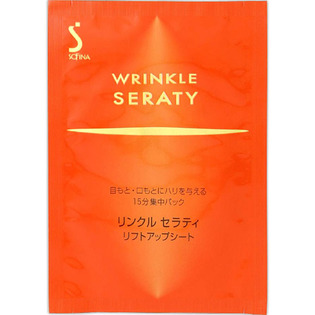

返回列表
产品名称：ソフィーナリンクルセラティ リフトアップシート

花王 ソフィーナリンクルセラティ リフトアップシート １２セット（２４枚）
メーカー 花王
JANコード 4901301208743
商品の特徴
目もと・口もとにハリを与える１５分集中パック
- 成分・分量
- ＜成分＞
水、グリセリン、ポリアクリル酸Na、ジイソステアリン酸ポリグリセリル-2、シリカ、エタノール、ポリアクリル酸、BG、アミジノプロリン、ショウキョウエキス、マロニエエキス、褐藻エキス、アスナロエキス、コハク酸ジグリコールグアニジン、ヒドロキシエチルイソステアリロキシイソプロパノールアミン、イソステアリルグリセリル、水酸化Al、ポリソルベート60、メチルパラベン
- 用法及び用量
- ＜使用方法＞
1．化粧水とリンクルセラティエッセンスでお肌をととのえたあとにお使いください。
2．シートを袋から取り出し、透明フィルムをはがします。
3．目もと・口もとなどにシートをのせ、指先で軽く押さえます。
4．およそ15分を目安にシートをはがしてください。
5．そのあとは普段どおりに、乳液やクリーム、美容液などをお使いください。